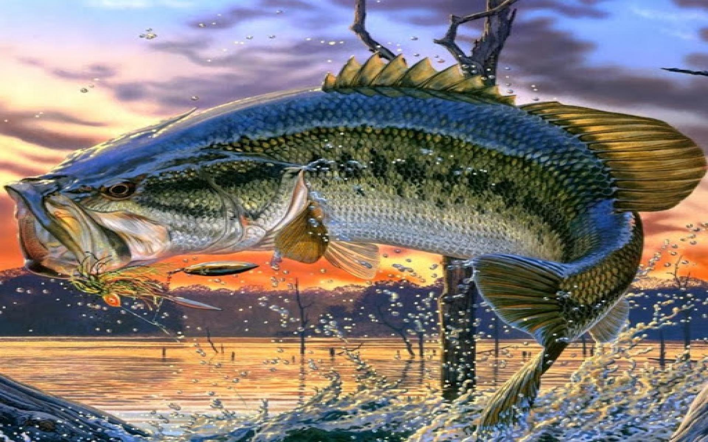

Velikoustni bas je priljubljena lovska riba, ki jo najdemo v številnih jezerih po vsej Severni Ameriki. Znani so po svojem značilnem videzu, s širokimi usti, ki lahko ob odprtju segajo čez oko. Veliki brancin lahko zraste precej velik, nekateri posamezniki tehtajo več kot 10 kg. So oportunistični plenilci, ki se hranijo z najrazličnejšim plenom, vključno z ribami, žuželkami in raki.
